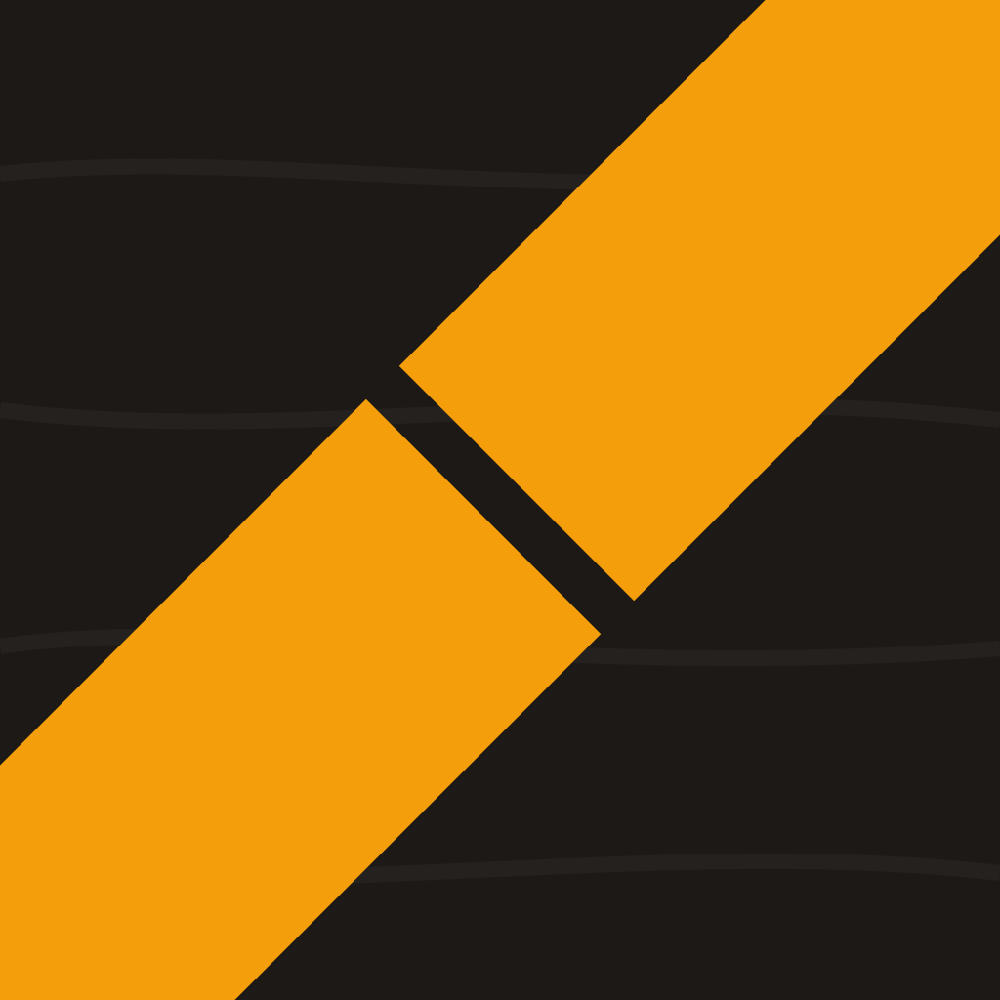
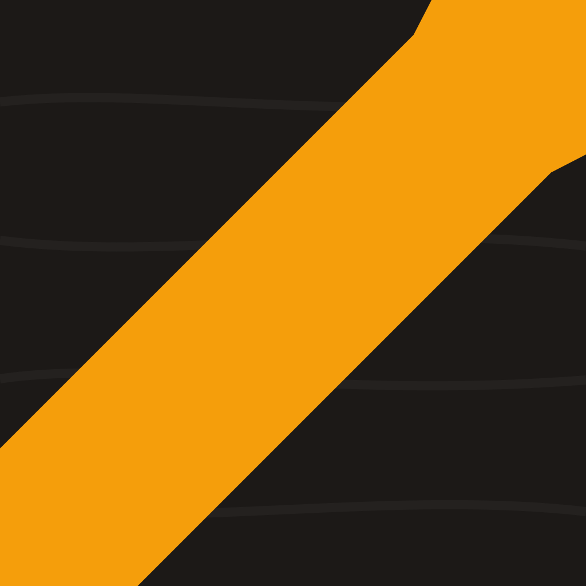
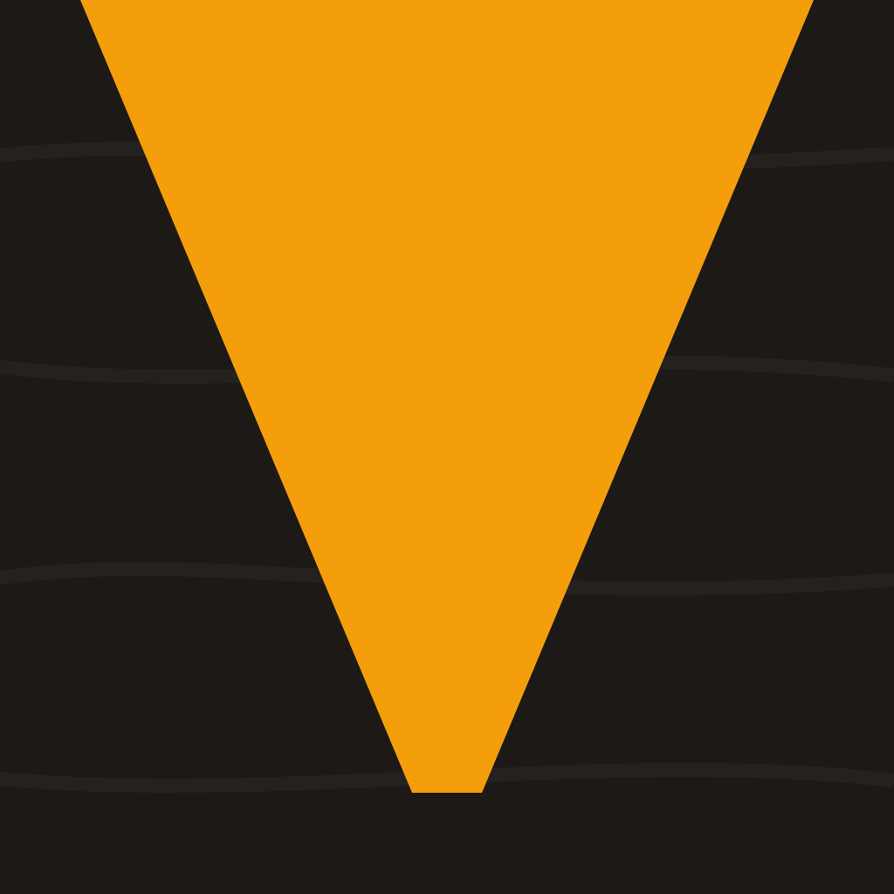
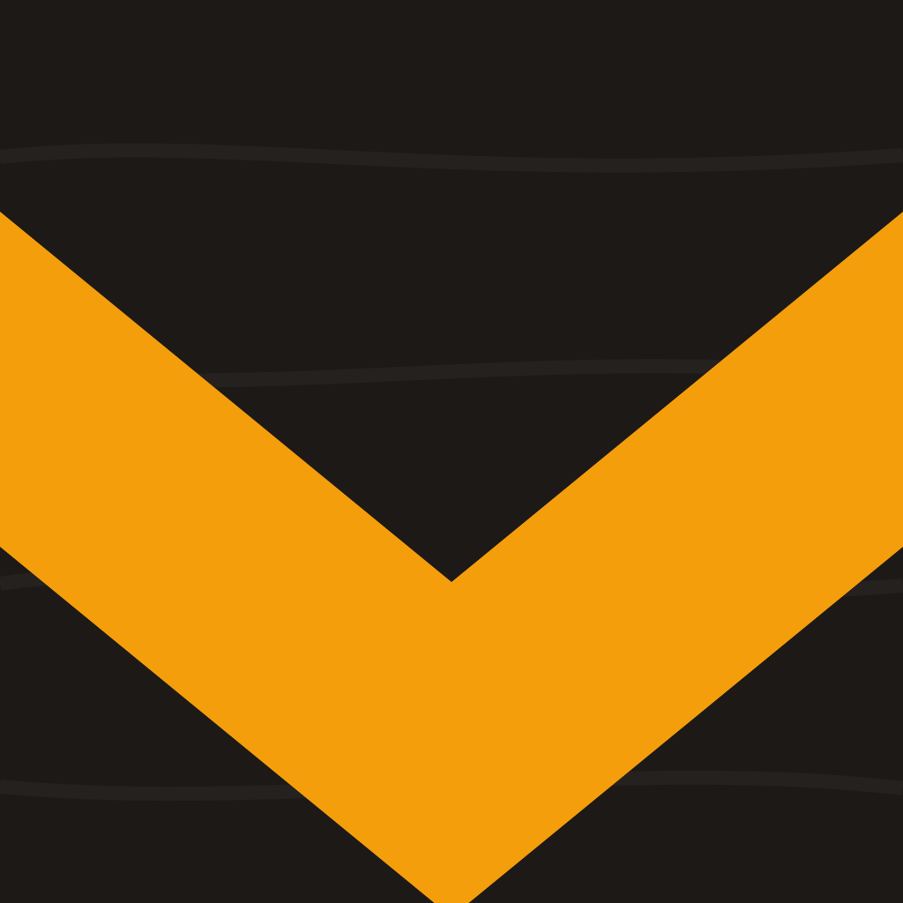
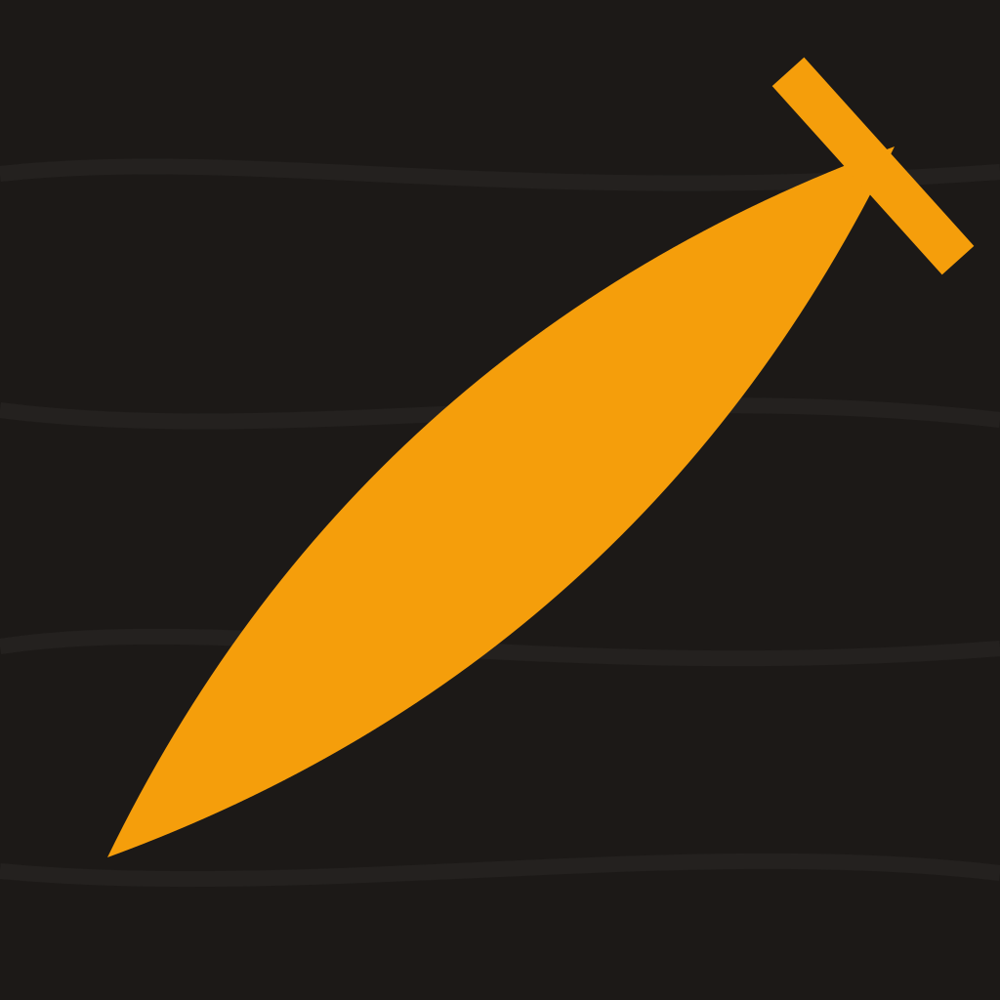

Konsept: "kerf işareti" — koyu levha yüzeyinde tek, kararlı amber kesim izi (docs/11 §4). Katmanlı SVG, düz form, gölge yok. 29pt sütunları gerçek App Store/ayarlar küçültmesini temsil eder (1x=29px · 2x=58px · 3x=87px). Açık zemin çipi, duvar kâğıdı çeşitliliği provasıdır.
| Varyant | 192px | 29pt @3x · @2x · @1x | Açık zeminde @2x | Not |
|---|---|---|---|---|
01 · kerf çizgisi, testere-payı boşluklu aile (a) — diyagonal tek kerf |
 |
87 58 29 | Amber ≈ %40. Boşluk = testere payı; 29px'te bile ayrışıyor. | |
02 · kerf çizgisi, V-ağızlı aile (a) — kesintisiz kerf + giriş ağzı |
 |
87 58 29 | Amber ≈ %43. En sade aday; ağız 29px'te kayboluyor, banda dönüşüyor. | |
03 · V-kertik aile (b) — üst kenardan açılmış kertik |
 |
87 58 29 | Amber ≈ %40. En yüksek siluet ayırt ediciliği; "V" harf çağrışımı riski not. | |
04 · V-oluk aile (b) — kenardan kenara oluk kesiti |
 |
87 58 29 | Amber ≈ %37. Güçlü ama jenerik "chevron/ok" okunması riski — anket sorusu. | |
05 · çizecek izi aile (c) — marking-knife skoru + gönye referansı |
 |
87 58 29 | Amber ≈ %17 — ret kriteri sınırında. Zanaat çağrışımı en yüksek, ölçek dayanımı en düşük aday. |